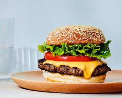

Burgers

Description
This is a meat patty between two buns. You can add many different condiments and toppings to make the burger something you would enjoy more.
Ingredients
- 1 lb of ground beef
- 4 hamburger buns
- Cheese
- lettuce
- pickles
- tomato
- onion
- ketchup
- mustard
Steps
- For your 1 lb of ground beef into four 1/4 lb round patties
- Set you grill to 400 degrees F
- As your grill heats prepare your toppings
- When you grill reaches temp put your patties on and close the grill for 2-3 minutes
- After the 2-3 minutes are up open the grill and flip them and set another 2 minute timer
- When the 2 minutes is up add your cheese and let it melt while on the grill for 1 minute
- Remove patties from grill and put them on a plate. Turn down the grill heat to 250 degrees F
- Toast you buns on the grill with indirect heat (away from the flame)
- Put your burgers together and enjoy